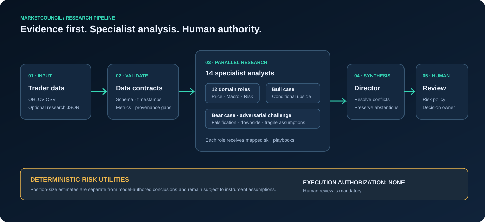
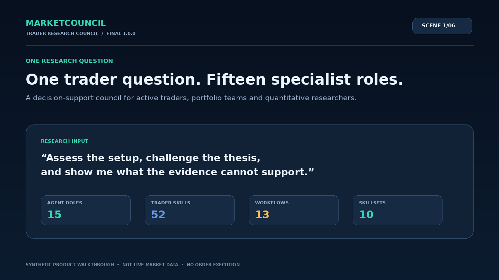

Market & security
Technical · Fundamental · Macro · Catalyst · Sentiment · Quant
A TRADING RESEARCH WORKBENCH
A research desk built to examine the market from multiple angles, challenge the thesis, and make uncertainty visible before you act.
Research infrastructure for traders, analysts and systematic investors.

01 / THE APPROACH
Markets are complex. A chart can look constructive while liquidity deteriorates. A catalyst can be real while the valuation already reflects it. A confident narrative can be built on stale data.
MarketCouncil separates research into defined specialist roles, gathers their findings, runs opposing reviews and creates a synthesis that keeps disagreement and data gaps in view.
02 / THE COUNCIL
Specialists cover distinct research areas. Bull and bear reviewers challenge the collected evidence. A synthesis director reconciles—not erases—the differences.
Technical · Fundamental · Macro · Catalyst · Sentiment · Quant
Microstructure · Derivatives · Crypto · Earnings · Institutional flow
Exposure, downside, liquidity, position sizing and portfolio constraints
Bull and bear cases. Counterarguments. Conditions that invalidate each thesis.
Evidence, confidence, disagreement, assumptions, missing data and watch conditions—organised for human review.
03 / IN PRACTICE
Research is inspectable. Workflows and skill playbooks are portable. The demo uses synthetic data—not a live trading account or market feed.
Read the documentation ↗
04 / THE TOOLKIT
74 focused Markdown skills with defined inputs, method, evidence standards and expected outputs.
Browse skills ↗13 orchestrated sequences with ordered steps, outputs and human decision gates.
Explore workflows ↗Optional Twelve Data and Binance public data integrations, plus validated local OHLCV CSVs.
Data notes ↗Single-instrument OHLCV backtesting with completed-bar signals, next-bar-open fills and simplified costs.
Methodology ↗Local SQLite paper adapter, Alpaca Paper and Binance Spot Testnet LIMIT adapter.
Adapter details ↗Position sizing and risk constraints implemented in code, separate from model-generated opinions.
Risk documentation ↗05 / GET STARTED
Clone the source, install the project and run its deterministic demo. No API keys are needed for the offline demo.
$ git clone https://github.com/voyager67/Market-Council-.git
$ cd Market-Council-
$ python -m venv .venv
$ source .venv/bin/activate
$ pip install -e .
$ market-council demo --format markdown06 / RESPONSIBLE USE
MarketCouncil is research software. It does not provide financial advice, predict outcomes, guarantee returns, or include a live-money order adapter. Market data may be delayed, incomplete or incorrect. Backtests are simplified simulations and may not reflect actual execution.
Review sources, assumptions, model outputs and risk calculations independently. A person remains responsible for decisions, order entry and capital allocation.
Security policy ↗ Risk notes ↗MARKETCOUNCIL / OPEN SOURCE